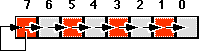
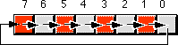
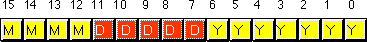
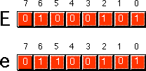

|
Table of Content | |
|
Table of Content | |
| CHAPTER ONE: DATA REPRESENTATION (Part 3) |
| 1.9 -
Shifts and Rotates 1.10 - Bit Fields and Packed Data 1.11 - The ASCII Character Set |
Another set of logical operations which apply to bit strings are the shift and rotate operations. These two categories can be further broken down into left shifts, left rotates, right shifts, and right rotates. These operations turn out to be extremely useful to assembly language programmers.
The left shift operation moves each bit in a bit string one position to the left:
Bit zero moves into bit position one, the previous value in bit position one moves into bit position two, etc. There are, of course, two questions that naturally arise: "What goes into bit zero?" and "Where does bit seven wind up?" Well, that depends on the context. We'll shift the value zero into the L.O. bit, and the previous value of bit seven will be the carry out of this operation.
Note that shifting a value to the left is the same thing as multiplying it by its radix. For example, shifting a decimal number one position to the left ( adding a zero to the right of the number) effectively multiplies it by ten (the radix):
1234 SHL 1 = 12340 (SHL 1 = shift left one position)
Since the radix of a binary number is two, shifting it left multiplies it by two. If you shift a binary value to the left twice, you multiply it by two twice (i.e., you multiply it by four). If you shift a binary value to the left three times, you multiply it by eight (2*2*2). In general, if you shift a value to the left n times, you multiply that value by2**n.
A right shift operation works the same way, except we're moving the data in the opposite direction. Bit seven moves into bit six, bit six moves into bit five, bit five moves into bit four, etc. During a right shift, we'll move a zero into bit seven, and bit zero will be the carry out of the operation:
Since a left shift is equivalent to a multiplication by two, it should come as no surprise that a right shift is roughly comparable to a division by two (or, in general, a division by the radix of the number). If you perform n right shifts, you will divide that number by2**n.
There is one problem with shift rights with respect to division: as described above a shift right is only equivalent to an unsigned division by two. For example, if you shift the unsigned representation of 254 (0FEh) one place to the right, you get 127 (07Fh), exactly what you would expect. However, if you shift the binary representation of -2 (0FEh) to the right one position, you get 127 (07Fh), which is not correct. This problem occurs because we're shifting a zero into bit seven. If bit seven previously contained a one, we're changing it from a negative to a positive number. Not a good thing when dividing by two.
To use the shift right as a division operator, we must define a third shift operation: arithmetic shift right. An arithmetic shift right works just like the normal shift right operation (a logical shift right) with one exception: instead of shifting a zero into bit seven, an arithmetic shift right operation leaves bit seven alone, that is, during the shift operation it does not modify the value of bit seven as shown below:

This generally produces the result you expect. For example, if you perform the arithmetic shift right operation on -2 (0FEh) you get -1 (0FFh). Keep one thing in mind about arithmetic shift right, however. This operation always rounds the numbers to the closest integer which is less than or equal to the actual result. Based on experiences with high level programming languages and the standard rules of integer truncation, most people assume this means that a division always truncates towards zero. But this simply isn't the case. For example, if you apply the arithmetic shift right operation on -1 (0FFh), the result is -1, not zero. -1 is less than zero so the arithmetic shift right operation rounds towards minus one. This is not a "bug" in the arithmetic shift right operation. This is the way integer division typically gets defined. The 80x86 integer division instruction also produces this result.
Another pair of useful operations are rotate left and rotate right. These operations behave like the shift left and shift right operations with one major difference: the bit shifted out from one end is shifted back in at the other end.

Although the 80x86 operates most efficiently on byte, word, and double word data types, occasionally you'll need to work with a data type that uses some number of bits other than eight, 16, or 32. For example, consider a date of the form "4/2/88". It takes three numeric values to represent this date: a month, day, and year value. Months, of course, take on the values 1..12. It will require at least four bits (maximum of sixteen different values) to represent the month. Days range between 1..31. So it will take five bits (maximum of 32 different values) to represent the day entry. The year value, assuming that we're working with values in the range 0..99, requires seven bits (which can be used to represent up to 128 different values). Four plus five plus seven is 16 bits, or two bytes. In other words, we can pack our date data into two bytes rather than the three that would be required if we used a separate byte for each of the month, day, and year values. This saves one byte of memory for each date stored, which could be a substantial saving if you need to store a lot of dates. The bits could be arranged as shown in .

MMMM represents the four bits making up the month value, DDDDD represents the five bits making up the day, and YYYYYYY is the seven bits comprising the year. Each collection of bits representing a data item is a bit field. April 2nd, 1988 would be represented as 4158h:
0100 00010 1011000 = 0100 0001 0101 1000b or 4158h 4 2 88
Although packed values are space efficient (that is, very efficient in terms of memory usage), they are computationally inefficient (slow!). The reason? It takes extra instructions to unpack the data packed into the various bit fields. These extra instructions take additional time to execute (and additional bytes to hold the instructions); hence, you must carefully consider whether packed data fields will save you anything.
Examples of practical packed data types abound. You could pack eight boolean values into a single byte, you could pack two BCD digits into a byte, etc.
The ASCII character set (excluding the extended characters defined by IBM) is divided into four groups of 32 characters. The first 32 characters, ASCII codes 0 through 1Fh (31), form a special set of non-printing characters called the control characters. We call them control characters because they perform various printer/display control operations rather than displaying symbols. Examples include carriage return, which positions the cursor to the left side of the current line of characters, line feed (which moves the cursor down one line on the output device), and back space (which moves the cursor back one position to the left). Unfortunately, different control characters perform different operations on different output devices. There is very little standardization among output devices. To find out exactly how a control character affects a particular device, you will need to consult its manual.
The second group of 32 ASCII character codes comprise various punctuation symbols, special characters, and the numeric digits. The most notable characters in this group include the space character (ASCII code 20h) and the numeric digits (ASCII codes 30h..39h). Note that the numeric digits differ from their numeric values only in the H.O. nibble. By subtracting 30h from the ASCII code for any particular digit you can obtain the numeric equivalent of that digit.
The third group of 32 ASCII characters is reserved for the upper case alphabetic characters. The ASCII codes for the characters "A".."Z" lie in the range 41h..5Ah (65..90). Since there are only 26 different alphabetic characters, the remaining six codes hold various special symbols.
The fourth, and final, group of 32 ASCII character codes are reserved for the lower case alphabetic symbols, five additional special symbols, and another control character (delete). Note that the lower case character symbols use the ASCII codes 61h..7Ah. If you convert the codes for the upper and lower case characters to binary, you will notice that the upper case symbols differ from their lower case equivalents in exactly one bit position. For example, consider the character code for "E" and "e" below:

The only place these two codes differ is in bit five. Upper case characters always contain a zero in bit five; lower case alphabetic characters always contain a one in bit five. You can use this fact to quickly convert between upper and lower case. If you have an upper case character you can force it to lower case by setting bit five to one. If you have a lower case character and you wish to force it to upper case, you can do so by setting bit five to zero. You can toggle an alphabetic character between upper and lower case by simply inverting bit five.
Indeed, bits five and six determine which of the four groups in the ASCII character set you're in:
| Bit 6 | Bit 5 | Group |
|---|---|---|
| 0 | 0 | Control Characters |
| 0 | 1 | Digits & Punctuation |
| 1 | 0 | Upper Case & Special |
| 1 | 1 | Lower Case & Special |
So you could, for instance, convert any upper or lower case (or corresponding special) character to its equivalent control character by setting bits five and six to zero. Consider, for a moment, the ASCII codes of the numeric digit characters:
| Char | Dec | Hex |
| "0" | 48 | 30h |
| "1" | 49 | 31h |
| "2" | 50 | 32h |
| "3" | 51 | 33h |
| "4" | 52 | 34h |
| "5" | 53 | 35h |
| "6" | 54 | 36h |
| "7" | 55 | 37h |
| "8" | 56 | 38h |
| "9" | 57 | 39h |
The decimal representations of these ASCII codes are not very enlightening. However, the hexadecimal representation of these ASCII codes reveals something very important - the L.O. nibble of the ASCII code is the binary equivalent of the represented number. By stripping away (i.e., setting to zero) the H.O. nibble of a numeric character, you can convert that character code to the corresponding binary representation. Conversely, you can convert a binary value in the range 0..9 to its ASCII character representation by simply setting the H.O. nibble to three. Note that you can use the logical-AND operation to force the H.O. bits to zero; likewise, you can use the logical-OR operation to force the H.O. bits to 0011 (three).
Note that you cannot convert a string of numeric characters to their equivalent binary representation by simply stripping the H.O. nibble from each digit in the string. Converting 123 (31h 32h 33h) in this fashion yields three bytes: 010203h, not the correct value which is 7Bh. Converting a string of digits to an integer requires more sophistication than this; the conversion above works only for single digits.
Bit seven in standard ASCII is always zero. This means that the ASCII character set consumes only half of the possible character codes in an eight bit byte. IBM uses the remaining 128 character codes for various special characters including international characters (those with accents, etc.), math symbols, and line drawing characters. Note that these extra characters are a non-standard extension to the ASCII character set. Of course, the name IBM has considerable clout, so almost all modern personal computers based on the 80x86 with a video display support the extended IBM/ASCII character set. Most printers support IBM's character set as well.
Should you need to exchange data with other machines which are not PC-compatible, you have only two alternatives: stick to standard ASCII or ensure that the target machine supports the extended IBM-PC character set. Some machines, like the Apple Macintosh, do not provide native support for the extended IBM-PC character set; however you may obtain a PC font which lets you display the extended character set. Other machines (e.g., Amiga and Atari ST) have similar capabilities. However, the 128 characters in the standard ASCII character set are the only ones you should count on transferring from system to system.
Despite the fact that it is a "standard", simply encoding your data using standard ASCII characters does not guarantee compatibility across systems. While it's true that an "A" on one machine is most likely an "A" on another machine, there is very little standardization across machines with respect to the use of the control characters. Indeed, of the 32 control codes plus delete, there are only four control codes commonly supported - backspace (BS), tab, carriage return (CR), and line feed (LF). Worse still, different machines often use these control codes in different ways. End of line is a particularly troublesome example. MS-DOS, CP/M, and other systems mark end of line by the two-character sequence CR/LF. Apple Macintosh, Apple II, and many other systems mark the end of line by a single CR character. UNIX systems mark the end of a line with a single LF character. Needless to say, attempting to exchange simple text files between such systems can be an experience in frustration. Even if you use standard ASCII characters in all your files on these systems, you will still need to convert the data when exchanging files between them. Fortunately, such conversions are rather simple.
Despite some major shortcomings, ASCII data is the standard for data interchange across computer systems and programs. Most programs can accept ASCII data; likewise most programs can produce ASCII data. Since you will be dealing with ASCII characters in assembly language, it would be wise to study the layout of the character set and memorize a few key ASCII codes (e.g., "0", "A", "a", etc.).
|
Table of Content | |